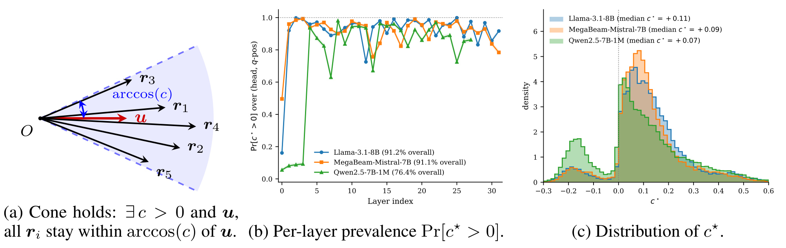
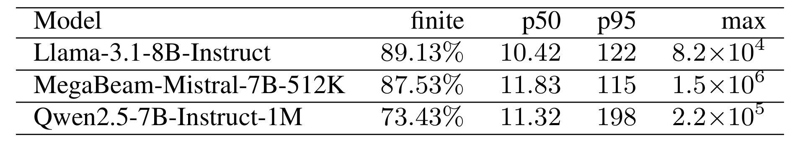
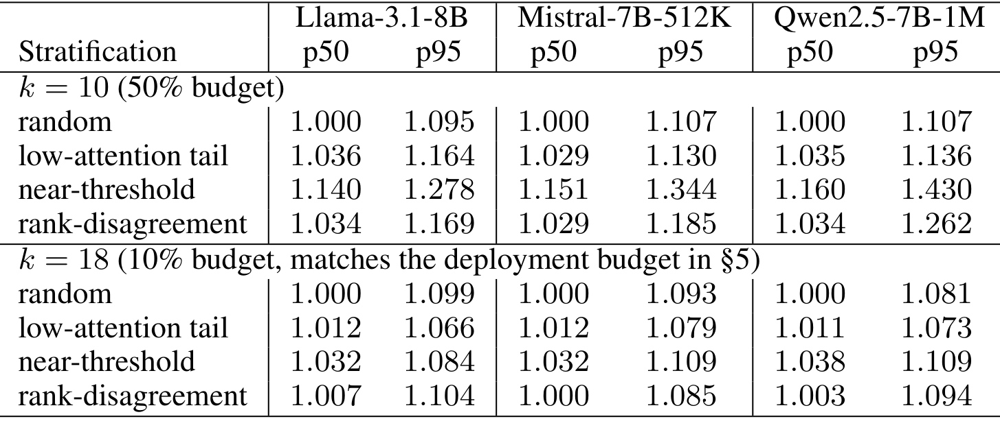
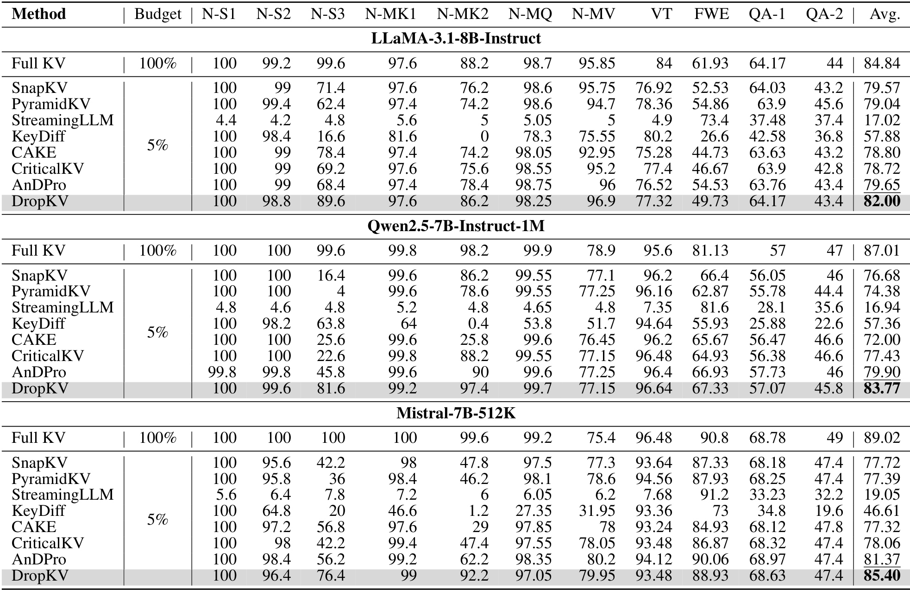
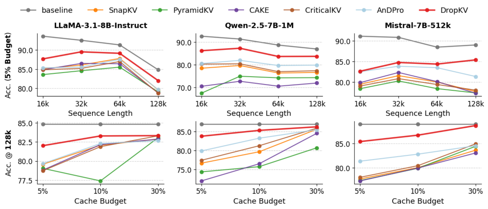
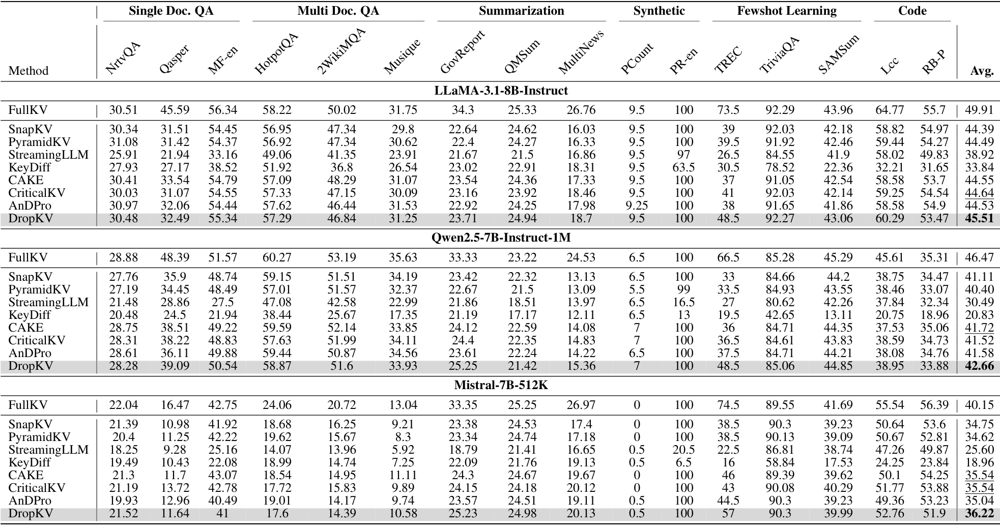
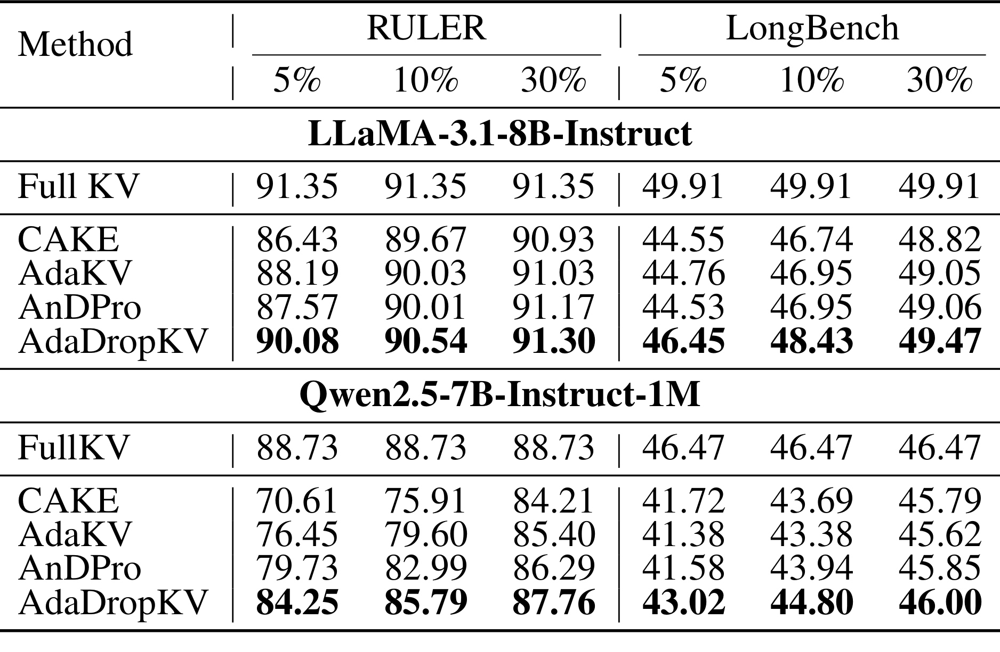
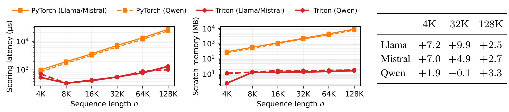
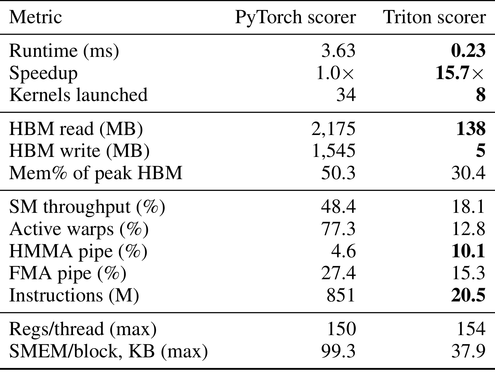
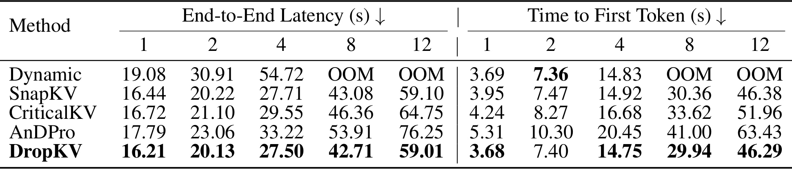

DropKV：用残差输出扰动选择可淘汰的 KV token
纽约州立大学奥尔巴尼分校与 IBM T. J. Watson Research Center、美国西北大学合作提出 DropKV。本文由 Aozhong Zhang 等作者完成，首次公开于 2026 年 10 月 15 日 UTC，北京时间 10 月 16 日，本文精读日期为 2026 年 10 月 19 日。论文完整标题为 DropKV: Decoupling Residual-Output Perturbation for Near-Optimal KV-Cache Eviction，统一入口为 arXiv:2610.22130。作者公开了 DropKV 代码仓库，本轮已核验入口可访问；本文没有独立复现其中内核和基准结果。下文实验数字均为作者报告，页码按原文顺序计。
长上下文推理中，KV 缓存随序列长度线性增长，逐渐成为显存瓶颈。只依据注意力权重淘汰 token 会忽视 value 的幅度和方向；直接最小化联合淘汰后的输出扰动又面临组合优化困难，而复杂评分的实现可能难以高效内核化。
1. 背景和问题
1.1 长上下文的成本为什么集中到 KV cache
自回归语言模型生成下一个 token 时，需要查询此前所有位置的 key，并对对应 value 做加权求和。保存历史 key/value 可以省去反复投影历史上下文的计算，因此 KV cache 是快速解码的基础。上下文越长，缓存就越大；同一张 GPU 上能容纳的并发请求数随之下降，每个解码步扫描缓存所需的显存带宽也不断增加。这里有两个不同但相关的瓶颈：容量决定 batch 能否放得下，带宽决定已放下请求的单步解码时延。论文的系统实验正是分别测量这两类收益，不能把二者合并成一个加速倍数。
原文引言用 Phi-3-mini 的例子说明量级：缓存 128K token 时，FP16 KV cache 约需 48GB，而模型权重约为 7GB。这个例子服务于缓存可能超过权重的动机，并非本文三个实验模型的逐一显存测量。更长的模型标称上下文也不等于本研究完成了对应最大长度验证：Mistral 的名称含 512K、Qwen 含 1M，但主文 RULER 重点测试到 128K。阅读系统论文时，应把支持长度、评测长度、压力测试长度分开记录，否则容易从模型名字推导出不存在的实验结论。
本文所在的技术路径是永久淘汰一部分 KV 位置。它与量化、低秩表示及 CPU 卸载的区别在于，token 对应的信息被真正移出驻留缓存，未来查询可能再也无法访问。动态稀疏注意力则可以保留完整缓存，只在某一步读一部分位置，信息可恢复性与容量收益都不同。因此“当前查询的输出变化很小”只是决定淘汰的一个近似目标，不能直接等同于“后续所有生成都不受影响”。输出扰动越小通常越有希望保留模型行为，但还需要任务得分和完整生成实验提供外部验证。
1.2 注意力不是 token 对输出贡献的全部
仅使用注意力分数的策略很直观：一个位置当前获得的权重越大，越应该保留。但注意力加权的是 value 向量，权重相同的两个位置可能有完全不同的输出作用。一个 value 若与当前输出非常接近，删去它后重新归一化，剩余位置仍可能得到接近原来的平均结果；另一个 value 虽然注意力不高，却偏离当前输出很远，删去它可能造成显著位移。DropKV 把这个差别写进残差项，让权重与方向、距离共同影响淘汰评分。这是论文最有可迁移价值的建模变化。
由此可以区分原文讨论的几类基线。StreamingLLM 等方法利用位置或 attention sink 经验，KNorm 和 KeyDiff 关注 key 的固有性质；SnapKV 等查询感知方法从观察窗口注意力中估计重要性；CriticalKV 与 AnDPro 开始关注输出扰动，但分别涉及上界代理或连续松弛。DropKV 的单点评分使用删除一个 token 时的精确输出差异，然后独立排序。它没有解决任意联合淘汰集合的全局最优问题，而是选择了一个可计算、可推导、易于实现的代理。这里的“精确”修饰单点扰动，不能转移到联合集合上。
联合决策难在相互作用。同一批被删 value 的残差方向可能互相抵消，也可能相互叠加；删去的总注意力质量还会改变 softmax 的归一化分母。因此把每个 token 的影响独立算出来再取最小者，并不在一般情况下等价于最小化联合输出变化。论文给出的 NP-hard 结论说明不能期待对任意输入都低成本获得全局最优，但复杂性结论并不自动证明一个启发式更优。作者进一步提出可检查的几何条件，解释何时独立排序不会因严重方向抵消而错过特别好的组合。
1.3 必须同时解决选择质量和评分代价
更精细的评分若需要先显式构造完整窗口注意力，再广播出每个查询与每个 value 的距离，可能在节省最终缓存之前就吃掉大量临时显存。这个现象使“缓存压缩方法”自身成为 prefill 的容量瓶颈。论文将可分解代理与实现联合考虑：评分公式需要访问的对象能否分块读入，是否可以复用前向输出和 log-sum-exp，是否能避免随上下文和维度相乘的大型中间张量。数学上简单的逐项评分，只有落成低访存的内核才真正适合长上下文。
本文值得看的原因也在这条链条完整：它先给出明确的局部目标，再说明近似条件，最后分别报告压缩后任务质量、孤立内核、同 batch prefill、最大 batch 吞吐和完整生成时延。对工程读者，最直接的启发是把评估拆到这些层次；对研究读者，最有价值的是观察“残差大但注意力小”的 token 是否真的决定任务差异。后文会保留任务级反例、理论未覆盖的层和一个负加速格子，因为它们限定了这条链条能支持多强的主张。
还需注意观察窗口的时间方向。DropKV 默认使用 prompt 末尾八个查询，等于用当前已知的一小段查询估计未来需要的缓存。末尾窗口可以包含用户问题，因而比纯位置规则更贴近本次任务，却仍不等于知道未来生成中出现的所有查询。多轮对话突然改问旧上下文中的另一个细节，或者生成任务从摘要转向精确引文，都可能暴露代理目标与未来目标之间的差距。本文没有提供线上用户流量验证，实验结论应落在所测长上下文基准和固定部署设置内。
理解目标时还要区分模型参数与运行状态。DropKV 不更新语言模型权重，也不需要为某个任务训练压缩模型，而是在推理时根据已经计算的查询与缓存决定保留位置。因此新增成本集中在评分、选择索引和缓存整理，收益则可能在后续很多解码步逐步摊销。输出很短时，评分成本在总请求中占比更高；输出很长时，压缩后每步节省的缓存读写更重要。原文固定五百步解码的完整时延实验只能代表这一长度条件，无法直接回答极短回答业务是否划算。这个成本结构也是为什么单独内核速度不足以决定产品收益。
还有一个容易忽略的判断对象：论文研究的是注意力输出在向量空间中的扰动，模型最终生成依赖后续投影、残差连接、归一化和更多层计算。某一层较小的欧氏距离并不天然给出下一 token 概率分布的统一误差界，更不直接给出事实性保证。残差目标提供了可解释的局部代理，实际答案质量仍必须测量。将局部近似与任务实验并列，是阅读这类压缩研究时比单独讨论“是否有理论”更有效的方式。
2. 方法
2.1 从联合扰动到单 token 代理
设当前查询的注意力权重为 $p_j$，缓存 value 为 $v_j$，完整注意力输出为 $a$。删除集合 $J$ 后，未删位置的相对注意力比例不变，但总和需要重新归一化。作者由此写出精确扰动，再把优化集合替换为独立单点评分。残差 $a-v_j$ 直接衡量 value 与当前输出的差异，分母则反映删除后重新归一化的放大效应。当一个 token 的注意力接近一时，这个分母会使删除代价迅速变大，符合集中注意力不应随意淘汰的直觉；注意力很小时，残差距离仍然能区分两种看似同样不重要的位置。
符号解释：$n$ 是缓存 token 数；$p_j$ 是完整缓存上归一化后的注意力；$v_j$ 是第 $j$ 个 value；$J$ 是淘汰集合，$P_J$ 是其注意力质量；$\Delta(J)$ 定义为淘汰后输出减去完整输出。该式针对一个查询、一个注意力头，是后续理论目标而非整层网络误差。
符号解释：$L$ 是候选淘汰池；$k$ 是要删除的 token 数；$J^*$ 是候选池内的联合最优集合；$g_j$ 是只删一个 token 的精确扰动范数；$\operatorname{topk}_{-}$ 表示取分数最小的 $k$ 项。实际缓存预算通常说的是保留比例，不能把这里的删除数量 $k$ 当成保留数量。独立计算全部单点代价需 $O(nd)$ 工作，$d$ 是头维度，避免了枚举组合的代价。
这个变换丢弃了联合残差之间的相互抵消，也没有在选出一个 token 后重算剩余 token 的代价。它因此适合一次分块计算和并行排序，而不需要串行贪心循环。单点目标与全局目标之间的距离，取决于候选残差的几何形态以及被删总质量；这正是后面锥条件与小概率条件分别控制的部分。与直接使用 value 范数相比，残差以当前输出为参照，因此保留了查询依赖；同一个 value 在不同 query 下可能得到不同的重要性，这一点不能简化为固定的 value 大小筛选。
用两个极端情况可以检查公式是否符合直觉。若某个 value 恰好等于完整输出，其残差为零，删除它不会改变这个查询的输出，即使其注意力不是最小者。若多个残差分别很大却方向相反，联合删除可能比各自单点代价暗示的更安全，这正是独立排序可能错失的组合。锥条件禁止这种严重相消，因而不是可有可无的技术假设。这个解释还揭示了为什么仅将注意力乘 value 范数并不等价：value 的绝对长度没有把当前输出所在位置纳入参照，无法识别前一个零扰动情况。
2.2 观察窗口累计与邻域保护
单个查询容易受偶然注意力峰值影响，论文沿用观察窗口做法，对末尾 $w$ 个 query 累加平方扰动。平方形式在 $w=1$ 时不改变单点范数的排序；在多个查询时，它把某个查询中的大损失放大，避免只看平均注意力而掩盖局部重要位置。这里累计的是每个 token 跨查询的删除损失，最后仍然只生成一套淘汰索引，因此保留了可分解计算结构。多查询聚合改变了代理目标，不能把单查询的近似常数原封不动套用。
符号解释：$t$ 是窗口内查询编号；$p_j^{(t)}$ 和 $a^{(t)}$ 分别是第 $t$ 个查询的完整注意力权重与输出；$w$ 是窗口长度。平方得分越小越适合删除。GQA 下共享同一 KV 头的查询头需要聚合评分，比较各实现时应保持这个归约语义一致。
原文 Algorithm 1 在评分后做 MaxPool1D，默认池化宽度为十一，再把最后八个观察窗口 token 的删除分数设为正无穷，最后选最小的 $k$ 项。最大池化让一个重要 token 周边的位置也得到较高的保留倾向，可理解为保护局部上下文结构；强制保留窗口则避免直接删去刚刚用于决策的末尾上下文。这两步都是实际算法的一部分。理论分析针对池化前评分，不能把算法全部后处理都宣称已由定理担保。若复现只有公式而忽略池化、末尾保护和 GQA 聚合，得到的任务质量可能与论文不同。
2.3 流式 Triton 评分内核
直接 PyTorch 写法可能构造窗口乘缓存长度的注意力矩阵，再产生窗口乘缓存长度乘头维度的残差中间结果。作者用三个 Triton 内核代替：辅助前向获得输出与 log-sum-exp，评分内核流式处理 key/value tile，split-K 合并部分状态。评分时从 logit 与已知归一化量恢复注意力，并用范数展开计算平方距离，避免为每一对查询和 token 保存完整向量差。原文还说明每个 value tile 在一次 pass 中只需读取一次，这是数学表达式转为访存节省的实际落点。
符号解释：$k_j$ 是 key 向量，$q^{(t)}$ 是查询，$d$ 是头维度；$\operatorname{LSE}^{(t)}$ 是对应完整 softmax 的 log-sum-exp；内积和预计算范数恢复精确平方距离。因果与 padding mask 必须在归一化和评分时一致处理，不能把填充 query 只置零就当作正确屏蔽。
附录 Algorithm 2 中还加入接近一概率的分母数值保护，并把恢复的注意力转换为 BF16 以匹配参考路径。高精度重算并不天然意味着与参考实现相同，因为接近一时分母误差会被平方放大，最终 top-k 可能翻转。作者报告内核路径与 PyTorch 在 BF16 舍入范围内一致；工程复现还应比较最终保留索引，而不只看平均 score 误差。三内核设计也不是盲目追求最少 launch：前向与评分的资源、并行维度不同，进一步永久融合可能反而损失 tile 级并行度，这一点由附录资源测量解释。
2.4 条件近似保证与其适用范围
作者要求候选池内每个注意力至多为 $\varepsilon$，并且 $k\varepsilon<1$，保证联合删除质量的保守上界不会把分母推到零。同时，残差要落在围绕某个单位方向的共同锥体内，避免多个正权重残差任意抵消。前者控制重新归一化的影响，后者把向量和的大小与单点范数之和联系起来。证明本质上在原始目标与可排序代理之间建立双向夹逼，再利用取最小 $k$ 项的最优性，得到乘法近似系数；它不是通过训练学出一个不可解释的压缩器。
符号解释：第三项中的方向记为 $u$，即 $u^\top(a-v_j)\ge c\|a-v_j\|_2$；$c\in(0,1]$ 控制锥开口，越小允许方向越分散；$F(J)=\|\Delta(J)\|_2$。小概率条件和锥条件必须同时成立，任一失效都不能使用这个乘法界。候选池限制也是定理的一部分，不能扩大成对全缓存任意集合的无条件最优保证。
符号解释：$F_\Sigma$ 是跨观察查询的联合扰动范数之和；$\widehat J_w$ 来自平方累计评分；多查询保证增加 $\sqrt w$，GQA 的 $g$ 个查询头聚合增加为 $\sqrt{gw}$。第二个式子是近似锥条件下的鲁棒界，$\mu$ 限制锥外残差的注意力加权质量；$\mu=0$ 回到严格锥条件。附录未直接实测该锥外质量，不能把鲁棒定理当作已经验证的数值覆盖率。理论还没有把多层误差传播、未来 query 分布及最终文本质量包含进同一个保证。
3. 实验结果
3.1 几何条件有多常见，近似界有多紧
作者在 A100-80GB 上统一评测 Llama-3.1-8B-Instruct、MegaBeam-Mistral-7B-512K、Qwen2.5-7B-Instruct-1M。理论条件检查在 128K prefill 上按层、头、查询位置取样，而实际穷举比较需要缩到可计算的子集。这两种检查分别回答“定理前提多常见”和“代理离联合最优多远”，不可视作完全同样的实验。主文与附录给出了足够细的区分，特别是 Qwen 早期层明显不满足正锥，应与平均覆盖率一起阅读。

Figure 1 左边解释共同方向为何能够阻止残差完全抵消，中间展示每层满足正锥的头与 query 位置比例，右边展示锥常数分布。附录精确覆盖率为 Llama 91.21%、Mistral 91.12%、Qwen 76.45%；主文四舍五入表述为约 91.2%、91.1%、76.5%，图例 Qwen 写为 76.4%，属于展示精度差异，本文保留附录精确值。中间曲线显示 Llama 第零层约只有 16%，Qwen 前四层低于 10%，所以“多数成立”并不代表所有层都可放心引用定理。右侧正值的中位数分别约为 0.107、0.094、0.074，几何方向虽然大体一致，但锥可能很宽，乘法常数仍可能很松。图中的层间结构比单个总体百分比更能指导后续研究：如果要针对难层设计混合策略，首先应检查这些低覆盖层是否恰好贡献了任务错误。

Table 18 把正锥条件与 $1-k\varepsilon>0$ 合并检查，有限乘法界的覆盖下降到 89.13%、87.53%、73.43%。有限子集中的界中位数为 10.42、11.83、11.32，p95 分别达到 122、115、198，最大值更大。因此这项理论提供的是结构解释和有条件保证，远非“误差最多增加百分之十”。小概率统计的中位 $\varepsilon$ 为约 $2.6$ 到 $4.3\times10^{-6}$，但少数头有较大峰值，使保守分母约束无法处处满足。这个表也说明只报正锥覆盖还不够：方向条件成立时，累计删除质量仍可能使分母上界失效。作者诚实报告了有限率和重尾，而不是只展示有利的平均情况；复用理论结论时也应延续这个口径。

Table 19 的最优值来自二十个候选键中枚举所有固定大小淘汰集合，检查 $k=10$ 和 $k=18$，分别对应保留一半和十分之一。实际注意力提取使用较小的 2K prefill；它不是在完整 128K 缓存中穷举。作者按随机、低注意力尾部、代理阈值附近、注意力与代理排名分歧四种方式采样，每个模型每格取一百五十个三元组。所有格子的代理比中位不超过 1.16，p95 不超过 1.43，最差单条记录为 1.82。最难的 near-threshold 层次说明接近决策边界的 token 更容易误排序；rank-disagreement 情况则表明残差项正是在注意力排序犹豫时发挥作用。这些数值比最坏界紧得多，但样本规模和候选分层限定了外推范围，不能宣称完整长缓存也已经测得同样的最优比。
3.2 RULER：极低预算下的任务保留

Table 1 在相同 5% 缓存预算下比较多个淘汰方法。Llama、Qwen、Mistral 的 DropKV 平均分为 82.00、83.77、85.40，相对各自最强压缩基线分别高 2.35、3.87、4.03 个绝对分。完整缓存对应为 84.84、87.01、89.02，因此压缩仍有 2.84、3.24、3.62 个分的缺口，不能描述为无损。任务列还显示收益并不均匀：Llama 的 N-S3 从 AnDPro 的 68.4 到 89.6，Qwen 的 N-S3 从 45.8 到 81.6，Mistral 的 N-MK2 从 62.2 到 92.2，说明若干关键任务拉动了平均差异。与此同时，Llama 的 FWE 为 49.73，低于 SnapKV 的 52.53 和 AnDPro 的 54.53；Mistral 的变量跟踪、频词等列也非处处最优。这里能支持“平均表现最好”，不能支持“每个任务都胜出”。
这组结果与残差目标在概念上相符：需要保留精确检索线索的任务，可能受少数 value 的偏离方向影响。然而论文没有逐个追踪被保留 token 与错误答案的因果对应，因此不能只凭表格断言具体某个任务提升就是某类语义 token 被找到了。更严谨的后续复现应记录双方保留集合的交并差异，选出导致排名分歧的位置，再干预删除这些位置观察答案变化。该设计能把平均得分提升与作者提出的残差机制联系得更紧，而不是停留在事后解释。

Figure 2 上排固定 5% 预算，横轴从 16K 到 128K；下排固定 128K，横轴为 5%、10%、30% 预算。DropKV 红线总体处于压缩基线前方，尤其长长度和低预算区域更明显，支持其在激进压缩时退化较慢。灰色完整缓存仍通常高于红线，提醒读者性能提升是相对其他压缩方法。还应看到，预算增大后的曲线并非所有基线都严格单调，例如 Llama 中 PyramidKV 的 10% 点低于 5% 点；这可能涉及配置、任务平均或策略自身行为，不能由图推导出普遍的“缓存越多分数必定越高”经验。曲线没有展示重复运行的波动区间，因此接近点位的小幅差异仍需结合完整任务明细判断。图像的横向长度变化也改变了任务实例，应以统一配置的原始任务定义为准，不应把两个点差异全归因于缓存数量。
3.3 LongBench：真实任务组合的收益更温和

Table 2 覆盖单文档问答、多文档问答、摘要、合成任务、少样本分类及代码任务，作者采用十六个英语与代码任务。DropKV 在三模型的平均分为 45.51、42.66、36.22，相比最强基线分别提高 0.87、0.94、0.68 个分；这些提升明显小于 RULER 的高压检索测试，说明不同任务分布下优势强度有差别。Llama 完整缓存为 49.91，Qwen 为 46.47，Mistral 为 40.15，压缩后的平均差距仍真实存在。表中 TREC 的 Llama 分数为 48.5，相对其他压缩方法突出，摘要部分多项也有改善，但 Llama 的 HotpotQA 57.29 低于 AnDPro 57.62，Qwen 的 QMSum 21.42 低于 SnapKV 22.32，Mistral 多文档问答几列也非第一。这些反例比一句“跨任务一致领先”更接近实际证据。
LongBench 把不同任务的自动指标做平均，所以一个分的平均差异不能理解成同一概率意义下的准确率提升。对服务某一特定领域的系统，应先查看对应任务切面：代码补全关心的是 Lcc 与 RB-P，文档助理更关心问答和摘要，而不是照搬整表平均排序。某些合成计数列在不同压缩方法间变化很小，也提示该列对策略区分度有限。作者的统一 evaluation harness 有助于减少实现偏差，但本轮没有独立复跑，也没有依据主文表格获得每个任务的误差条；小于一个分的差距值得进一步用样本级配对比较检验稳定性。
3.4 自适应头预算是否可以叠加

Table 3 把 DropKV 的 token 评分放进 AdaKV 风格的头预算分配，得到 AdaDropKV。RULER 此处是 64K，不是前表的 128K。Llama 在 5%、10%、30% 预算分别为 90.08、90.54、91.30，完整缓存为 91.35；Qwen 为 84.25、85.79、87.76，完整缓存为 88.73。LongBench 的 Llama 对应为 46.45、48.43、49.47，Qwen 为 43.02、44.80、46.00。该表说明“给不同头分多少缓存”与“头内保留哪些 token”是可组合的两个决策层，残差评分的优势没有因更换预算分配立即消失。不过这个实验同时含有分配策略与评分策略，不能拿 AdaDropKV 的分数全归功于固定头预算版本。与不同基线比较时，模型、长度、预算和头分配必须一并对齐，特别不能把本表高于前表的分数视为同一任务条件下的单纯算法增益。
3.5 评分内核、临时显存和同 batch prefill

Figure 3 左侧对照的是 DropKV 同一评分语义的朴素 PyTorch 与 Triton 路径。在 128K、batch 一、窗口八、5% 预算的条件下，作者报告评分内核快 19.8 倍，临时 scratch 由约 9GB 降到约 17MB，约缩小 540 倍；最重模型的总峰值分配由 10.6GB 降到 1.6GB。这里 scratch、总峰值和最终 KV 容量是三个量，不能把 540 倍写成模型总显存缩小倍数。右侧比较各格能够共同支持的 batch，作者定义相对改善为 PyTorch 时间减 Triton 时间再除以 Triton 时间；九格中八格为正，范围 1.9% 到 9.9%，Qwen 在 32K 为 -0.1%。即使评分部分大幅加速，prefill 还包含模型其他计算，总体收益自然更小。若换用以原始时间为分母的时延降幅，数值也会不同，转述时需保留定义。

Table 20 在 16K、Llama 形状的独立 Nsight Compute 采集中显示，评分调用从 3.63ms 到 0.23ms，约 15.7 倍；launch 数从三十四降到八，读 HBM 从 2175MB 到 138MB，写从 1545MB 到 5MB，指令数从 851M 到 20.5M。它和 128K 的 19.8 倍来自不同长度及采集设置，应分别引用。一个容易误读的细节是 Triton 的 SM 吞吐百分比和 active warps 反而更低，但总运行时间大幅缩短。这并不矛盾：朴素实现制造了更多中间张量和工作，较高设备忙碌度可能只是忙于无效搬运。附录进一步指出评分 kernel 的 HBM 带宽达到约峰值 54%，实际约 1.10TB/s；资源占用限制并行度，却不妨碍减少总流量带来收益。评价内核应结合工作量、字节数和端到端时延，不能仅盯 occupancy 高低。
3.6 完整生成与最大并发吞吐的边界

Table 4 的输入为 Mistral-7B-512K、32K 上下文、五百个解码步、5% 预算。batch 一时，DropKV 完整生成 16.21 秒，SnapKV 16.44 秒，Dynamic 为 19.08 秒；batch 四时分别为 27.50、27.71、54.72 秒。因此对接近的强淘汰基线，整段生成收益可能很小，而相对完整动态缓存的优势更明显。batch 八与十二时，Dynamic OOM，所有淘汰方法还能继续运行，DropKV 为 42.71 与 59.01 秒。这展示容量边界的实际价值，但 OOM 格子没有可比较时延，不能虚构无限倍加速。首 token 时间方面 batch 二的 Dynamic 为 7.36 秒、DropKV 为 7.40 秒，故“DropKV 在所有格子的 TTFT 都最低”并不成立；作者更精确的说法是可比动态缓存时差异在 0.6% 内。
附录 Table 13 则让每种方法使用自身最大可行 batch，DropKV 相对 Dynamic 的解码吞吐为 1.75 到 8.22 倍。这个收益来源包括淘汰后 KV 带宽减少和能容纳更多并发，不能归因于评分 Triton 内核本身。原文明确当前实现加速的是 prefill 评分，decode-time Triton 内核属于未来工作；各淘汰方法在相同预算下的解码步时延接近。对于落地评估，这意味着必须先确定业务目标：固定并发下看单请求尾时延，容量紧张时看最大并发与吞吐，首 token 服务质量看 TTFT。用各自最大 batch 的吞吐替代同 batch latency，会把系统容量优势伪装成算子计算优势，也容易误导资源规划。
4. 总结
DropKV 的核心贡献是把 value 相对当前输出的残差纳入 token 删除代价，并让这个代价同时具备明确的推导和可流式实现的形式。它提供了三层不同强度的证据：单点扰动公式是给定注意力条件下的精确恒等式；联合近似保证需要候选池、小概率和锥条件；任务质量与系统时延则由特定模型、基准和硬件上的实验支持。这三层结论彼此相连，但不能互相替代。把层次分清，才可以同时认可其方法简洁与实现收益，又避免把有条件结果夸大为普遍最优。
对大模型服务工程，最值得采用的研究思路是先检查中间张量再优化算术。评分公式增加了 value 残差，但范数展开、前向输出复用与 tile 流式访问使实际实现反而比直接框架写法更省显存。对已有 SnapKV 类流水线，残差分数可作为独立可替换模块进行对照；头预算策略可以另行组合，但实验必须锁定窗口、池化、末尾保护、GQA 归约与缓存比例。若只保留公式而改动后处理，得到不同结果时很难判断是机制问题还是实现差异。
风险首先来自条件覆盖。Qwen 约四分之一的取样三元组不满足正锥，联合前提覆盖更低，早期层尤其明显；最坏界在有限子集里也很松。其次，观察窗口只能描述当前 prompt 末尾的查询，永久删除对未来话题变化的影响没有被一个局部扰动定理消除。第三，实验集中在三类七到八十亿参数模型和一款 A100 GPU，更多架构、量化 KV、不同 batch 分布及生产调度器仍需验证。第四，LongBench 部分任务列落后于其他压缩方法，平均第一不能用来保证任意业务任务获益。第五，性能数字层次容易混淆，19.8 倍内核、最高 9.9% prefill 和最大并发吞吐区间分别回答不同问题，业务收益必须重新测量。
可执行的后续验证有四项。第一，在自己的模型上按层记录锥条件与累计删除质量，检查低覆盖层是否与输出误差集中位置一致，再考虑是否给难层更保守预算。第二，针对注意力排序与残差排序分歧最大的 token 做删留干预，验证任务改善是否真的由 value 几何解释。第三，做固定并发、固定输入输出长度的 Triton/PyTorch/强淘汰基线比较，同时独立报告最大可行并发，避免两个口径交叉。第四，引入连续对话与后续问题转向的压力测试，观察被永久删去的低频事实能否导致延迟暴露的错误。这些检查直接对应论文留下的范围，而不是简单复跑一个总平均分。
此外，作者公开代码提高了实现可检查性，但可访问的仓库入口不等于已经复现结果。本轮阅读核验了公式、图表和数字之间的对应关系，尚未对内核执行数值一致性测试，也未重新生成基准分数。后续复用时，适合先在少量请求上比较完整输出扰动和保留索引，再扩展到正式评测，尽早发现精度、掩码或预算定义差异。
从推荐系统研究视角，本文可以启发“保留哪些历史信息”的目标设计：频率、注意力和表示新颖性未必等于对最终输出的边际作用，参考当前输出的残差提供了另一种解释变量。但将其迁移到用户行为序列裁剪或长历史建模仍是研究设想，本文没有完成推荐离线指标或线上实验。任何迁移都需要重新定义输出、候选池与未来查询分布，并检查短期代理损失是否损伤长期兴趣。本文适合作为缓存淘汰的一种理论与系统联合设计范例，而非可直接套用到所有长期记忆问题的通用结论。